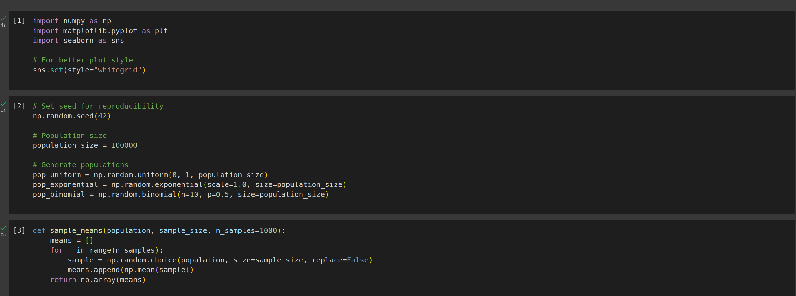
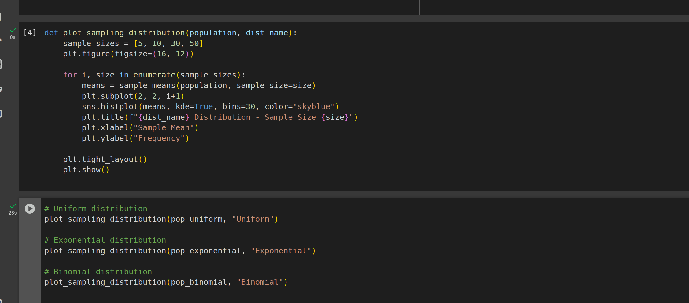
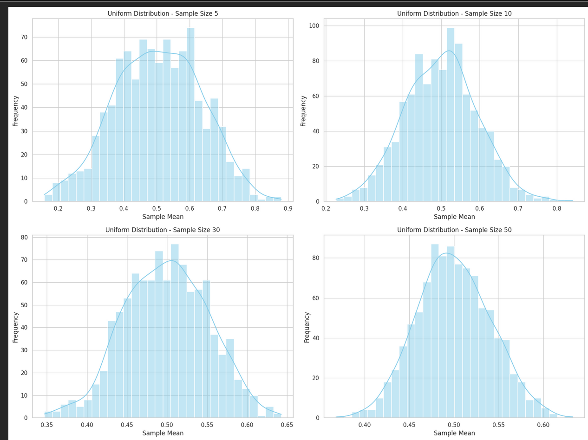
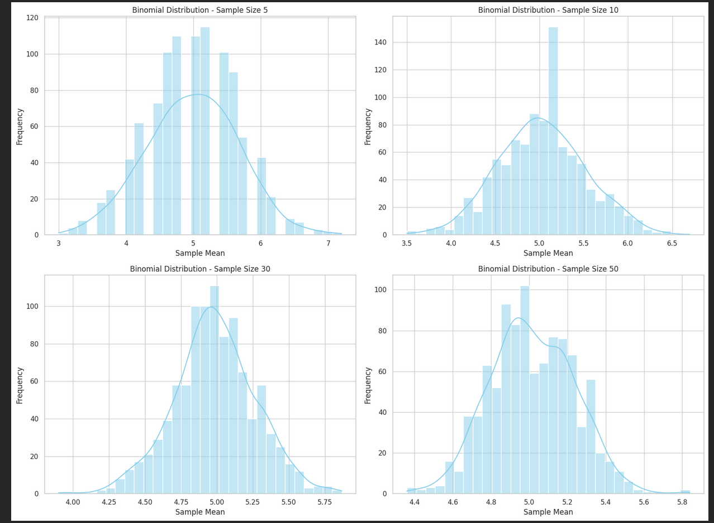
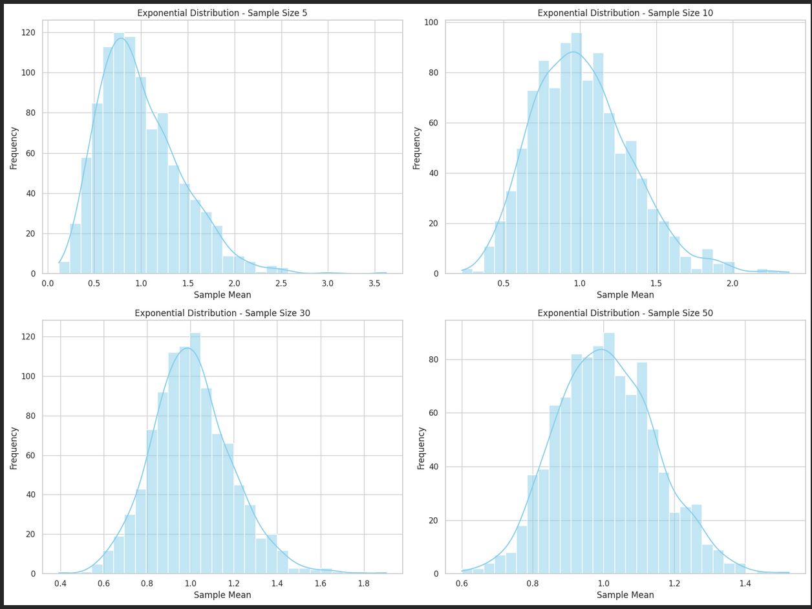

Central Limit Theorem – Simulation Summary with Mathematical Notation
What is the Central Limit Theorem (CLT)?
The Central Limit Theorem (CLT) states:
That is, the sampling distribution of the sample mean approaches a normal distribution, even if the original data are not normally distributed.
Simulation Methodology
- Generate a large population from each of three distributions:
- Uniform: \( X \sim \mathcal{U}(0, 1) \)
- Exponential: \( X \sim \text{Exp}(\lambda = 1) \)
-
Binomial: \( X \sim \text{Bin}(n=10, p=0.5) \)
-
For each population:
- Draw \( N = 1000 \) random samples of size \( n \in \{5, 10, 30, 50\} \)
-
Compute sample means:
\(\(\bar{X}_i = \frac{1}{n} \sum_{j=1}^n x_{ij}\)\) -
Plot the histogram of the sampling distribution of \( \bar{X} \)
Results by Distribution
Uniform Distribution: \( X \sim \mathcal{U}(0, 1) \)
- Symmetric, bounded distribution.
- Sample means converge quickly to normality.
| Sample Size | Observation |
|---|---|
| \( n = 5 \) | Slightly rough shape |
| \( n = 10 \) | Bell shape starts to form |
| \( n = 30, 50 \) | Clearly normal-shaped |
CLT holds well even for small \( n \).
2 Exponential Distribution: \( X \sim \text{Exp}(1) \)
- Right-skewed, unbounded.
- Takes larger \( n \) for convergence.
| Sample Size | Observation |
|---|---|
| \( n = 5 \) | Strong right skew |
| \( n = 10 \) | Still skewed |
| \( n = 30 \) | More symmetric |
| \( n = 50 \) | Nearly normal |
Larger \( n \) needed for CLT to apply effectively.
3️ Binomial Distribution: \( X \sim \text{Bin}(10, 0.5) \)
- Discrete, symmetric when \( p = 0.5 \)
- Sample means become continuous-looking as \( n \) increases.
| Sample Size | Observation |
|---|---|
| \( n = 5 \) | Jagged/stepped |
| \( n = 10 \) | Becoming smoother |
| \( n = 30, 50 \) | Smooth and bell-shaped |
Discreteness fades with larger \( n \); CLT applies.
Summary Table
| Distribution | Skewed? | Fast Convergence? | Normality at \( n = 50 \) |
|---|---|---|---|
| Uniform | No | Yes | Yes |
| Exponential | Yes | No | Approximates Normal |
| Binomial | Low | Moderate | Yes |
Key Theoretical Insights
- As \( n \) increases:
- \( \bar{X} \sim \mathcal{N}(\mu, \sigma^2/n) \)
-
The variance of the sample mean decreases: $$ \text{Var}(\bar{X}) = \frac{\sigma^2}{n} $$
-
CLT applies regardless of population shape, but convergence speed depends on skewness and kurtosis.
Applications of CLT
- Quality Control: Predict batch quality from samples
- Healthcare: Infer population health statistics
- Finance: Estimate expected returns and risks
- Polling: Use voter samples to predict elections
Conclusion
The Central Limit Theorem is powerful because it allows the use of normal-based methods (confidence intervals, hypothesis testing) on data from non-normal populations, provided the sample size is sufficiently large.
    